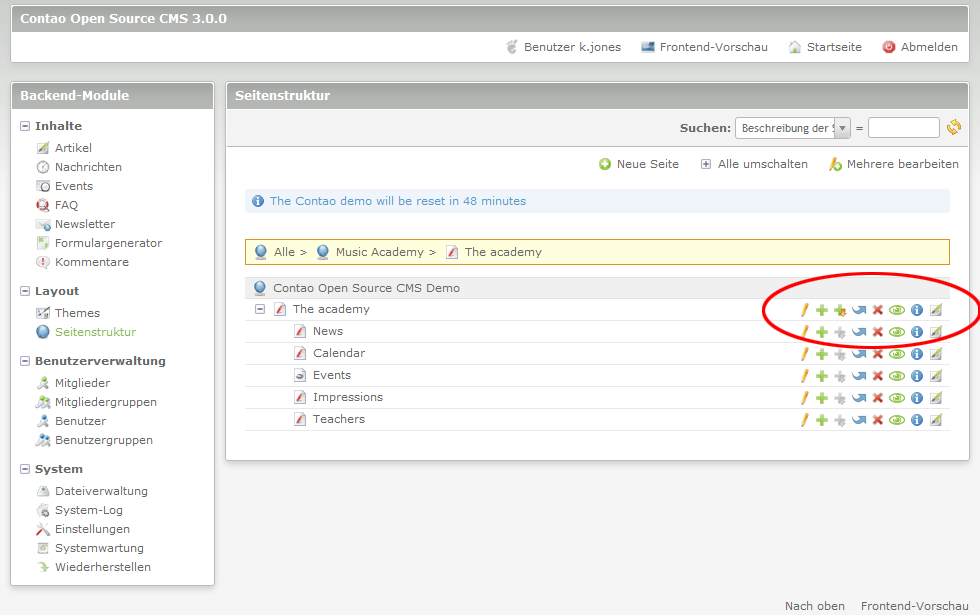
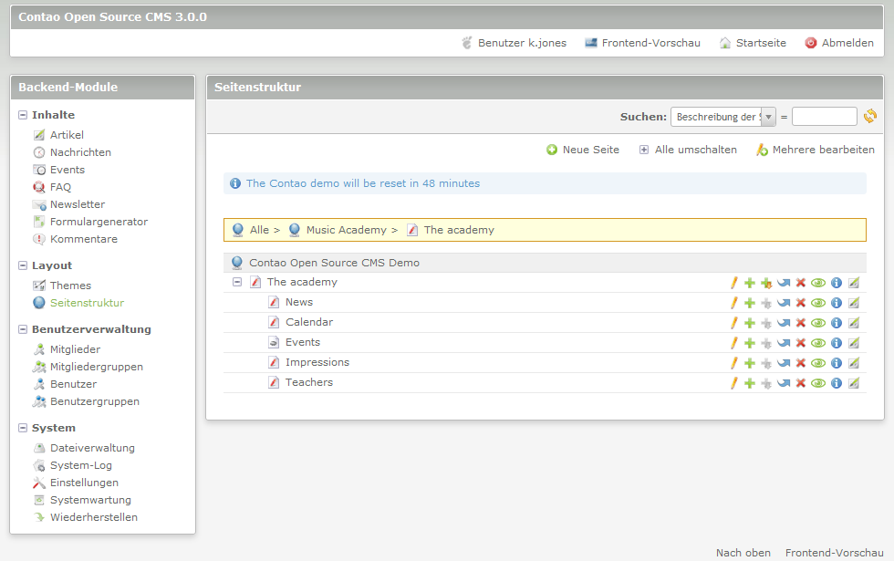
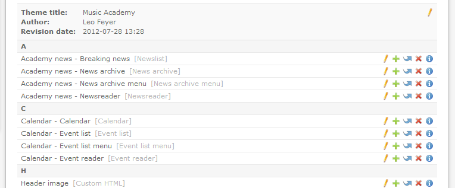
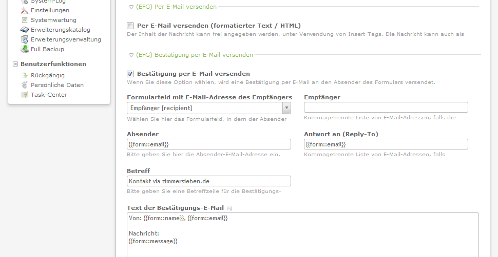
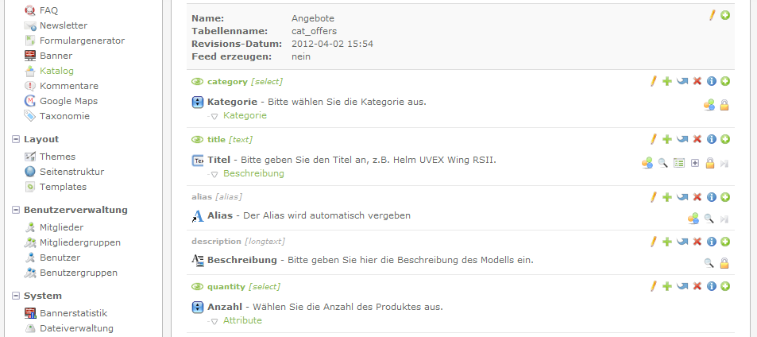
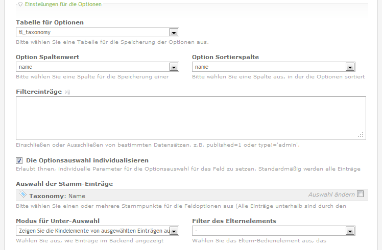

Contao
Einleitung
1 von 28
Contao
Einleitung
2 von 28
Contao - Eine kurze Übersicht
- Überblick
- Was zeichnet Contao aus?
- Core-Funktionen
- Erweiterungen
- Contao aus der Frontendsicht
- Stärken
- Schwächen
Contao
1. Überblick
3 von 28
1. Überblick
- erster Release: 2006
- seit 2.9.0 Contao, vorher TYPOlight
- aktueller Stand: Contao 2.11.x und Contao 3.0.x
- benötigt PHP (>= 5.2) und Datenbank (gewöhnlich MySQL)
- Projektseite: contao.org
- Forum: community.contao.org
- relativ neu: kommerzielle Themes: themes.contao.org
Contao
1. Überblick
4 von 28
1. Überblick
- Hauptentwickler: Leo Feyer
- Zuarbeit durch 7 Teammitglieder
-
verschiedene Arbeitsgruppen rund um das Hauptteam:
- Barrierefreiheit
- Extension Repository
Contao
1. Überblick
5 von 28
1. Überblick
-
Contao Assocation:
- Verein, um Contao erfolgreich weiterzuentwickeln
-
Ziele:
- Finanzierung der Weiterentwicklung von Contao
- Contao in den Medien
- Organisation von Events
- schnelle Gewinnung einer soliden Mitgliederbasis
Contao
2. Was zeichnet Contao aus?
6 von 28
2. Was zeichnet Contao aus?
- Seitenbasiertes CMS
- strikte Trennung von BE und FE
- regelmäßiger Updatezyklus
- alle 2 Jahre eine Version mit Long Term Support
- hohe Flexibilität bei den Inhalten (später mehr)
- viele Module bereits im Core enthalten
- momentan mehr als 1.300 Erweiterungen
Contao
2. Was zeichnet Contao aus?
7 von 28
2. Was zeichnet Contao aus?
- Barrierearmut (genügt W3C/ WAI-Anforderungen, Quelle: contao.org)
- HTML5- oder XHTML-Doctype auswählbar
- Templates (später mehr)
- dadurch sehr updatesicher
- umfangreiche Themeverwaltung (später mehr)
- mootools (seit Beginn an) oder jQuery (seit 3.0) einsetzbar
- Unterstützung von Mehrsprachigkeit
- Multi-Domainfähig
Contao
3. Core-Funktionen
8 von 28
3. Core-Funktionen - Erweiterte Editierfunktionen
Contao
3. Core-Funktionen
9 von 28
3. Core-Funktionen - Zentrale Seitenstruktur
Contao
3. Core-Funktionen
10 von 28
3. Core-Funktionen - Benutzerverwaltung
- Differenzierung zwischen Benutzer- und Mitgliederverwaltung
- Benutzer: Backend
- Mitglieder: Frontend
- Benutzer- und Gruppeneben bei beiden möglich
-
zuweisbar für
- Seiten,
- FE-Module,
- BE-Module,
- Erweiterungen von Dritten
Contao
3. Core-Funktionen
11 von 28
3. Core-Funktionen - Formulargenerator
- komplette Formulare lassen sich zusammenklicken
- HTML5-Unterstützung, z.B. durch Nutzung des placeholder-Attributs
-
verschiedene Funktionen möglich:
- E-Mail-Versand,
- Speicherung in die DB,
- Entgegennahme von Anhängen
Contao
3. Core-Funktionen
12 von 28
3. Core-Funktionen - Integriertes CSS-Framework
- Stylesheets lassen sich komplett im BE verwalten
- Regeln können einfach und komfortabel gesetzt werden
- bestehende Stylesheets lassen sich importieren
- Unterstützung von CSS3
- Unterstützung von Media Queries
Contao
3. Core-Funktionen
13 von 28
3. Core-Funktionen - Dateiverwaltung

Contao
3. Core-Funktionen
14 von 28
3. Core-Funktionen - Themes
- Contao-Themes sind mehr als bloßes "Verzeichnis auswählen"
-
Theme-Verwaltung beinhaltet
- CSS-Dateien,
- Module,
- Seitenlayouts
- komplett über das BE pflegbar
- Themes können einer oder mehrerer Domains zugeordnet werden
Contao
3. Core-Funktionen
15 von 28
3. Core-Funktionen - Themes
Contao
3. Core-Funktionen
16 von 28
3. Core-Funktionen - Weitere Module
- News bzw. Blog
- Kalender
- Newsletter
- Suchmaschine
- kostenpflichtiges Live-Update mit einem Klick
Contao
4. Erweiterungen
17 von 28
4. Erweiterungen
- internes Extension Repository (ER) im Backend
- ER auch über contao.org sowie Drittanbieter verfügbar
- mehr als 1.300 Erweiterungen verfügbar
- erweitern den Funktionsumfang von Core-Modulen, z.B. efg
- fügen neue Funktionalitäten hinzu
Contao
4. Erweiterungen
18 von 28
4. Erweiterungen - Extended Form Generator (efg)
- erweitert den Funktionsumfang des Formulargenerators
-
z.B.
- Formulierung einer Bestätigungsmail
- Benutzer des Kontaktformulars kann als Absender definiert werden
- umfangreichere und feinere Möglichkeiten, in eine DB zu speichern
Contao
4. Erweiterungen
19 von 28
4. Erweiterungen - Extended Form Generator (efg)
Contao
4. Erweiterungen
20 von 28
4. Erweiterungen - MetaModels (früher Catalog)
- komplett eigenständige Erweiterung
- Ziel: Erstellung von Katalogen ohne Programmierkenntnisse
- erstellter Katalog ähnelt einem BE-Modul
-
mögliche Einsatzszenarien:
- Shops ohne Warenkorb
- Referenzlisten
- Personendatenbanken
Contao
4. Erweiterungen
21 von 28
4. Erweiterungen - MetaModels (früher Catalog)
Contao
4. Erweiterungen
22 von 28
4. Erweiterungen - MetaModels (früher Catalog)
Contao
5. Contao aus Frontendsicht
23 von 28
5. Contao aus Frontendsicht
- FE-Templates haben bereits hohe Qualität
- Auswahl von HTML5- oder XHTML-Templates
- Markup ist barrierearm (genügt W3C/ WAI-Anforderungen, Quelle: contao.org)
- ein Bearbeiten und Anpassen an eigenen Stil ist nicht immer hilfreich
-
z.B. fe_page (das Mastertemplate):
- muss nach jedem Update überprüft werden, da in der Vergangengeit oftmals Änderungen vorgenommen wurden
- Beispiel: Umstellung des Doctype (auf HTML5)
- Updatesicherheit: Templates werden in eigenem Verzeichnis gespeichert
Contao
5. Contao aus Frontendsicht
24 von 28
5. Contao aus Frontendsicht
- hilfreich: Contao ermittelt User Agent und gibt diesen als CSS-Klasse im <body> aus
- PHP ist in allen Templates verfügbar
- dabei ist sogar eine DB-Abfrage in einem Template möglich
-
viele Module und Erweiterungen nutzen verschachtelte Templates
- mod_xxx.html5 für das äußere Modul-Template
- layout_xxx.html5 für die Darstellung des Inhalts
- hilfreich: alle in einem Template verfügbaren Variablen und Arrays lassen sich mittels
<?php echo $this->showTemplateVars(); ?>anzeigen
Contao
6. Stärken
25 von 28
6. Stärken
- durchgehend valide und semantische Templates
- hohe Core-Funktionalität
- relativ Einsteigerfreundlich
- zahlreiche Erweiterungen
- umfangreiche Cachingmechanismen
- Markup und Scripte lassen sich von Haus aus komprimieren
- Dateiarbeit komplett über BE möglich
Contao
6. Stärken
26 von 28
6. Stärken
-
hohe Flexibilität in den Inhalten
- Artikel können unterschiedliche Inhaltselemente haben
- Newsbeiträge können unterschiedliche Inhaltselemente haben
-
Inserttags
- Platzhalter, die durch Inhalte ersetzt werden
- z.B. Links zu Seiten oder Artikeln
- aber auch Daten des angemeldeten Mitglieds
Contao
7. Schwächen
27 von 28
7. Schwächen
-
keine komplette Trennung der Inhalte möglich
- Inhalte über Inserttags über Webseiten hinweg
- Seitenauswahl aus anderen Webseiten möglich
- kein Frontend-Editing
- Mehrsprachigkeit muss umständlich über zweiten Seitenbaum dargestellt werden
- je nach Sichtweise: fertige Templates müssen aufwendig umgebaut werden
- Das Look & Feel von Contao ist subjektiv
Contao
Ende
28 von 28